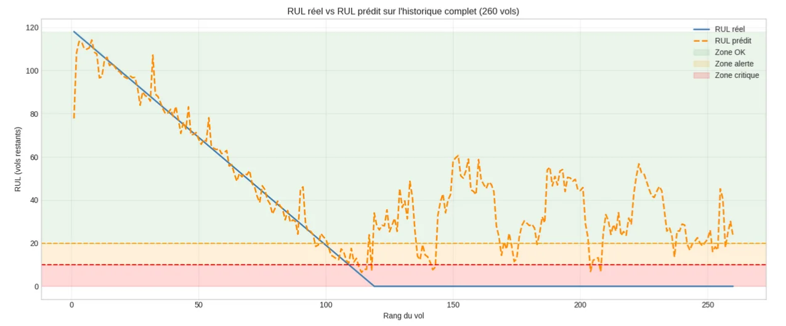
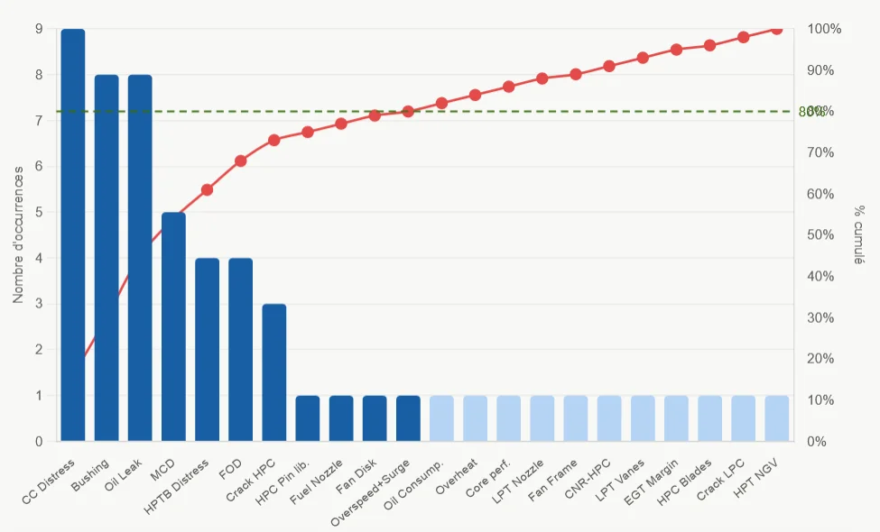
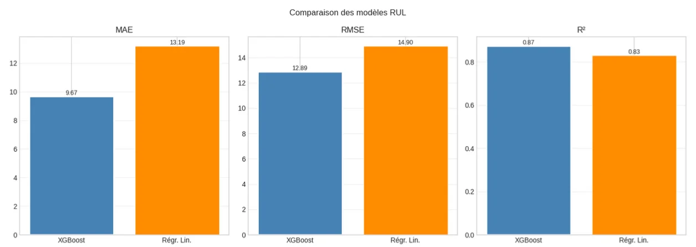
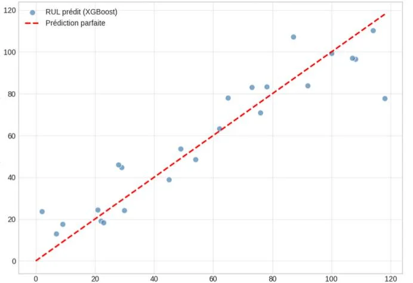
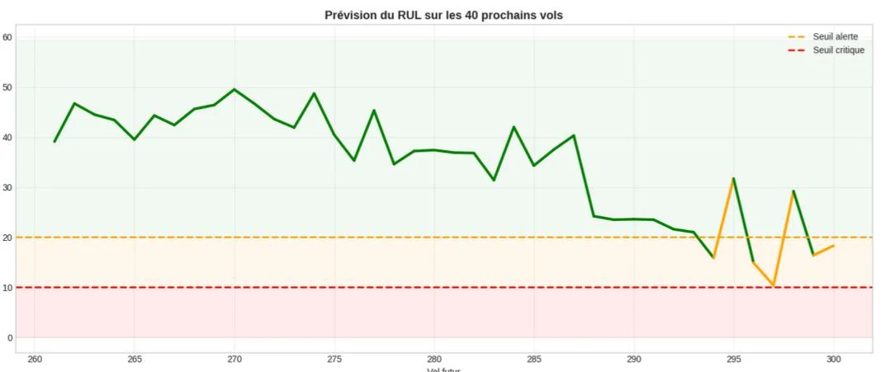

Anticiper la panne d’un turboréacteur avant qu’elle n’arrive
Les déposes non programmées de moteur coûtent cher et immobilisent les avions. À partir des rapports d’atelier d’une flotte de CFM56-7B, j’ai identifié le module le plus critique (Pareto, AMDEC), puis développé un modèle XGBoost qui estime la durée de vie résiduelle (RUL) à partir de la marge EGT et des vibrations du cœur moteur.

Des rapports d’atelier à la décision de maintenance
- DonnéesRapports d’atelier filtrés et base Excel structurée : TSN/CSN, motifs de dépose, déposes programmées exclues.
- Pareto7 causes représentent ≈ 80 % des défaillances, dont 6 dans le module MM02 (cœur moteur).
- AMDECCriticité G × O × D sur 6 niveaux, complétée par une priorité technico-économique.
- PrédictionXGBoost (200 arbres) sur 260 vols : marge EGT, vibrations N2, CSN → RUL et décision.
Quelles défaillances pèsent le plus ?
Les défaillances non programmées ont été classées par fréquence. Le cœur moteur (MM02 : compresseur HP, chambre de combustion, turbine HP) concentre presque toutes les causes critiques.

Les 7 causes critiques (≈ 80 %)
Après pondération par la gravité, la détectabilité et le coût, l’AMDEC retient comme plus critiques : aubes de turbine HP, ingestion de corps étrangers, chambre de combustion et fissures du compresseur HP, toutes dans le module MM02, qui devient la cible de la surveillance prédictive.
Calcul de criticité AMDEC
Grilles de cotation construites pour l’étude avec les équipes méthodes et maintenance, sur 6 niveaux. Réglez les trois indices pour voir la criticité et la catégorie de risque.
Dans l’étude, la criticité est ensuite multipliée par le coût total de la défaillance (réparation et immobilisation) pour obtenir une priorité technico-économique.
Seuils de surveillance du moteur
Les deux indicateurs retenus et les seuils utilisés pour construire le RUL. Faites varier les mesures pour voir la décision qui en découle.
Marge = EGT limite − EGT mesurée. Plus elle baisse, plus le moteur est dégradé.
Vibrations du rotor haute pression, précurseur d’usure et de déséquilibre.
Marge EGT
Vibrations N2
Dans l’historique étudié, le seuil critique de vibration est franchi au vol 119 (0,1008 > 0,095), qui fixe la panne de référence : le RUL maximal est donc de 118 vols. Le modèle bascule ensuite en « Planifier » sous 20 vols de RUL et en « Intervenir » sous 10 vols.
Modèle prédictif : XGBoost contre régression linéaire
Données découpées en 80 % d’entraînement et 20 % de test. La régression linéaire sert de référence.
| Modèle | MAE | RMSE | R² |
|---|---|---|---|
| XGBoost (200 arbres) | 9,67 vols | 12,89 vols | 0,872 |
| Régression linéaire | 13,19 vols | 14,90 vols | 0,829 |
| Gain XGBoost | −26,7 % | −13,5 % | +4,3 pts |
Le modèle suit la décroissance réelle du RUL, entre en zone d’alerte vers le vol 100 et en zone critique vers le vol 110, soit 9 à 19 vols d’anticipation avant la panne. Sur une simulation des 40 vols suivants, il recommande de planifier une visite atelier dès le vol 294, sans jamais atteindre la zone critique.



Analyse et résultats
Perspectives
- Entraîner le modèle sur plusieurs moteurs et plusieurs pannes pour qu’il généralise au-delà d’un historique.
- Ajouter d’autres paramètres de surveillance : analyse d’huile, débit carburant, vitesses N1/N2.
- Intégrer les prédictions dans un tableau de bord de planification des visites atelier.
Données d’exploitation d’une compagnie aérienne, anonymisées. Seuls la méthode et les résultats agrégés sont présentés.